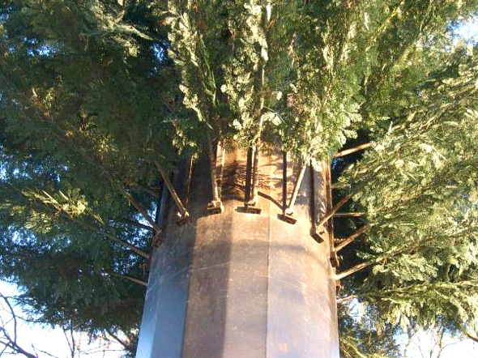
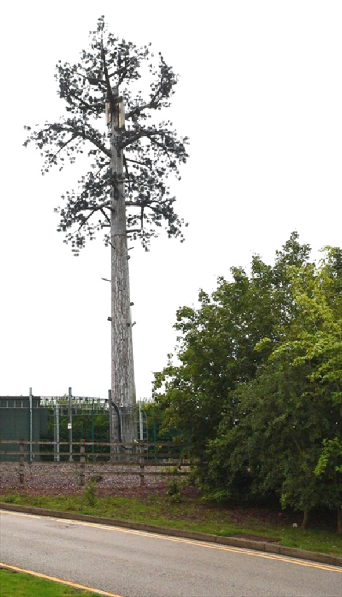
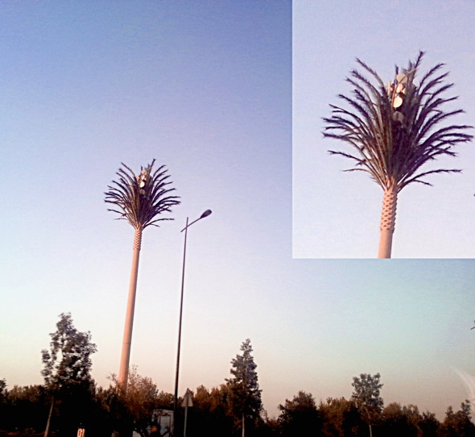
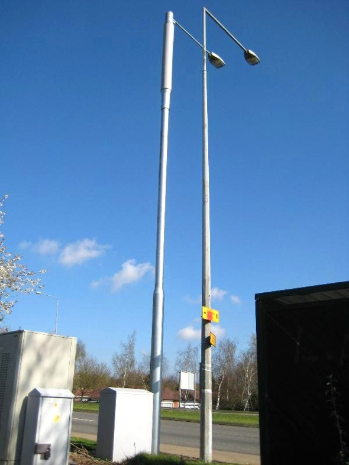
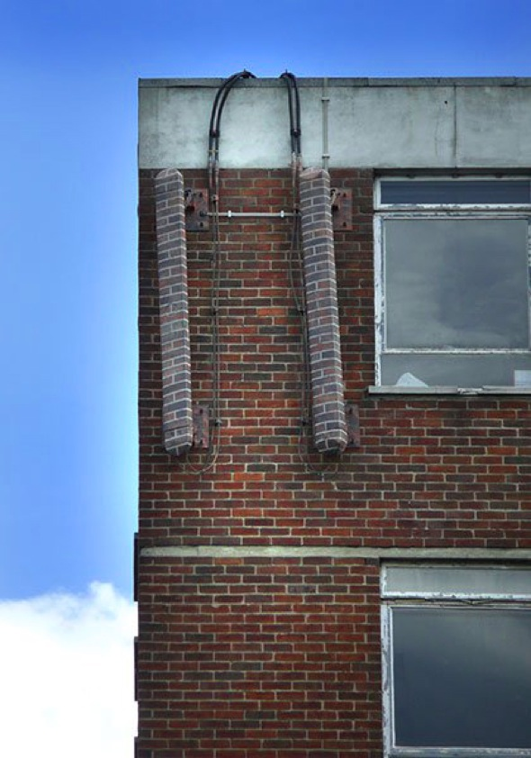
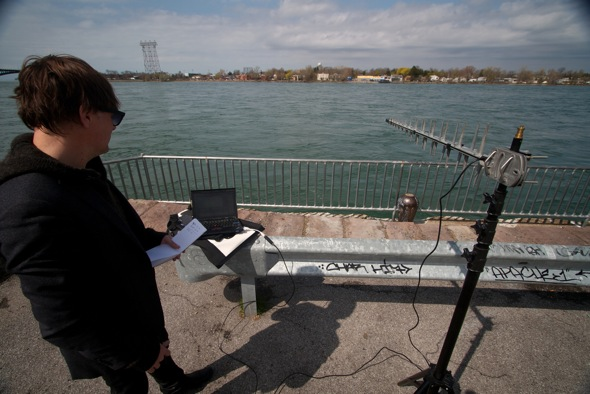

Published in collaboration with VVVNT

Cell tower disguised as fir tree, Bedfordshire, UK. Photo: Dragontree.
"The Critical Engineer considers any technology depended upon to be both a challenge and a threat. The greater the dependence on a technology the greater the need to study and expose its inner workings, regardless of ownership or legal provision. "
– The Critical Engineering Manifesto, 2011-2014
SIGHTINGS
My first conscious contact with telecommunications infrastructure came in the form of a telephone call that simultaneously rang for about a hundred people.
It was called a party line and was common in the 80s in rural New Zealand and other areas too sparsely populated to justify a unique telephone cable to each household. Instead, the telco ran just one line out from the nearest exchange as though the whole community were a single address, and then wove it across the hills, through wooden T-poles, stitching farm to farm.
It worked like this: each farm was given a ring pattern similar to a phrase of Morse Code. Our antique phone with its wooden housing and little metal bells would ring with a dozen different patterns a day, but the rule was that you'd only pick up when the call was for you.
Naturally my sisters and I broke that rule once or twice, trying to keep a lid on our giggles as we lifted the wrong pattern. Though the system practically implemented wiretapping, we knew listening in on others was wrong and, apart from the odd prank, our Party Line worked quite well. As far as I knew the whole world was wired that way, that telecommunication anywhere would imply an open infrastructure with a contract of trust at the center.
Looking at the Party Line from a system design perspective, you could say the filtering and addressing workload was pushed onto us to cut costs on switching infrastructure. But we didn't think of it like that. It seemed no more work than answering to your name.
Years later, I was in a convenience store in Auckland with my then-girlfriend when I saw my first mobile phone (apart from those in films). A man in a suit was talking loudly to his magic black brick and clearly enjoying the spectacle of himself as a high-tech telepath. Then the thing actually rang. I always wondered if it was actually his first call as he almost dropped the phone in fright and then snuck his red face out the door, leaving us and the clerk ripe with chuckles.
Like many Kiwis, I swore to never own a mobile phone. With paranoia in NZ at a healthy peak, people said "they can track you" and "who wants to be hassled all day?" But soon enough we let them in the back, and hearing a ring in the street followed by "where are you?", that infectious anxiety, became commonplace.
I was living in Melbourne in 1999 when the antipodean market flooded with phones. All eyes were on the phones. No one seemed to notice of the cellular infrastructure being expanded to support them. No one seemed to care how it all worked.

Cell tower disguised as pine tree, Stafford, UK. Photo: Geordie Samurai2.
THE PHYSICAL LAYER
Throughout the history of telecommunications, it is advances in materials science, computing (analogue, then digital), and signal processing that have contributed most to today's distributed and complex communications infrastructure.
Signal processing was almost singularly responsible for making possible a domestic market for internet access by creating a means of repurposing existing infrastructure. Dial-up (as it was known) crept in as an epiphyte. It piggy-backed on existing copper-core telephone lines to provide connection to an Internet Service Provider (ISP) with nothing more than a modem required at the user-end. This vastly reduced the load on municipal engineers which would otherwise be ripping up streets to lay a whole new layer of optical or other network fiber.
By the late 90s, network infrastructure accessible in the West (from switches and routers to server hardware) had become cheaper, smaller, and more performant. The Digital Subscriber Line system (DSL) and its popular ADSL variant were to replace dial-up in cities. It offered vastly improved bandwidth and eliminated disruption of telephone calls by passing signal along the same copper at much higher frequencies (a trick for which we can thank information theorist Claude Shannon)[1].
In the US, the Federal Communication Commission had already approved unlicensed production of wireless networking devices under the 802.11 specification in 1985, but it took until 1999 for the 802.11b (2.4GHz) and 802.11a (5GHz) wireless specifications to emerge. Soon low-cost, low-power, wireless networking hardware, ranging from antennae to chipsets, was pouring off production lines, sparking a fever of wireless access points in much of the Western world.
The modem, router network switch, and wireless access point soon merged into one forgettable little object, further disappearing the computer's physical network layer from view, perhaps behind a pile of magazines on the desk. And with the rapid infrastructure rollout that followed technological advances driven by entirely new markets, the internet quickly grew to near-ubiquitous proportions.
For users at its end-points, the internet seemed to just slip right in; first into walls and then into the air itself.
It wasn't so easy for the cellular network, however.
Cell networks had no pig to ride. By design, they depend largely on roof-bound, bulky installations of antennae, amplifiers, transceivers, and other hardware components which make up the cellular Base Transceiver Station, or BTS. It's the BTS, affixed to those things we call cell towers, that facilitate wireless communication between a phone and the network beyond.
So unlike internet infrastructure, a cellular BTS needs to be out in the open, to be atop so many tall things, before it can meet the promises of mobile telephony. Contradicting the neat, integrated enclosures of the phones that it serves, cellular infrastructure comes into the world as a rooftop horizon eater, an encrustation of poised vertebrae in signature, off-white plastic; blank blooms from a machine world seemingly indifferent to our own.
Cell tower disguised as flagpole, Gorseinon, Wales. Photo: Veritas Vita.
Strangely enough, despite all the stuff of cellular infrastructure, on roofs and poles in and around cities, the prevailing idea was that mobile phones communicated via satellite and that all these towers were something to do with TV.
It's not hard to imagine operators might actually want their infrastructure to be misunderstood this way. Better that than inviting analysis and discussion—becoming the subject of debate.
COUNTERMEASURES
Cellular infrastructure hadn't been up long before a spate of personal injury lawsuits were filed in the U.S against Motorola, NEC, Nokia and Siemens from people claiming they had been made ill by mobile phones.
Probably the first clandestine case was that of Christopher Newman who filed a suit against Motorola in 2000, accusing the company of producing a phone that gave him a malignant tumor in his brain, a phone he'd been using for an estimated 342 hours since 1992. [2] Even though the case was lost (also losing an appeal) it sent a shudder of fear, uncertainty, and doubt through the industry and anyone that owned a mobile.
Researchers on either side of the production line scrambled to conclusively determine if there might be a danger to mobile communications, despite the FCC's assurances that both the devices and licensed infrastructure were well within the compliancy framework for safe radiation levels.
A decade later an October 2012 ruling by Italy's Supreme Court concluded that a business executive's brain tumor was in fact linked to his heavy use of a mobile phone, reigniting the debate and giving many the feeling that this had all dragged on too long.[3]
Enough to drive any CEO to drink were further studies examining whether cognitive effects, altered sleep states, or blood-brain barrier breaches might also be symptoms of long-term mobile phone use. [4][5] This, coupled with a surge of complaints from those claiming to have Electromagnetic Hypersensitivity Disorder (convinced that the FCC levels for radiation don't take their condition into account), soon shifted the focus of questions to cell towers themselves.

Cell tower disguised as palm tree, Marrakech, Morocco. Photo: Julian Oliver.
In recent years, any cellular infrastructure near schools, on top of kindergarten roofs and hospitals has became a source of anxiety. Meanwhile, public opinion and books by supposed experts (Levitt 2000, Davis 2011) further condemned the structures, which in 2013 were the subject of panic and protest in India following a worrying study by the NSCRI, a prominent cancer institute in Kolkata. [6]
The most extreme symptom of anxiety toward cell towers came in February 2014, in the Old City of Acre in Israel. Five people were killed and ten injured when a gas tank was deliberately exploded in an apartment building. Investigators concluded that the explosion was an attempt to sabotage cell towers installed in the empty top floor of the building, rented to the operators by the building's landlord (a widespread trend in Israel of late).
Three locals were convinced by rumors that the towers were the cause of an elevated incidence of cancer among residents in the Old City. To right this wrong, they climbed up to the top floor and placed a gas tank charge next to the hidden tower, hoping to destroy it.[7]
To this day, there is still no indication the debate will ever subside, fuelled by fear-mongering, pseudo-science, vested interests, and a litany of weakly conclusive research for and against. Meanwhile, network operators continue to rein in public opinion with prolific counter-research and trying out new strategies, like camouflaging their hardware infrastructure.

Cell tower disguised as lamppost, Milton Keynes, UK. Photo: Norfolk12.
STEALTH
Due to its surreptitious nature, it's difficult to say when and where the covert communications project took root, but around 8 or 9 years ago cellular infrastructure in cities throughout Europe and the U.S. quietly began disguising itself, or at least trying to.
These towers in hiding became known as Stealth Cell Towers.
Perhaps the operators saw it coming, but it didn't take long for a global army of radio geeks to equip themselves with RF scanners and spectrum analysers and take to the streets. For a dedicated few, finding and unmasking the expanding taxonomy of stealth towers, and posting pictures of their kills on busy forums, is a point of pride and humor with disguised devices that include oddly mimicked foliage, faux architectural elements, or hastily painted textural overlays.

BTS disguised as bricks, Lincoln, UK. Photo: V70PDB.
I joined the hunt a little late, in the form of a commissioned project, but soon found my share, including a new and far more stealthy species.
MAN IN THE MIDDLE
In 2012, Abandoned Normal Devices, a Liverpool based organisation, wrote to me asking to commission a work for the next edition of their festival. I'd long wanted to devote some sustained time to looking into cellular infrastructure as a topic of inquiry, so offered them a project called Border Bumping which looked at contradictions of territory when cellular infrastructure from one country bleeds over the border and into another.
Every cellular BTS has three primary identifiers: a Mobile Network Code (or MNC), a 2 or 3-digit number identifying the tower operator, a Mobile Country Code (or MCC), a 3-digital number indicating the country the BTS is licensed to operate within, and the Cell ID, a unique and longer number identifying the BTS itself, wherever it is.
The MNC is used by phones to determine if the BTS is one they're allowed to register with (home network or roaming partner) whereas the MCC denotes the country in which the BTS resides — visible most notably upon receiving the welcome message when crossing a border.
The Border Bumping project is primarily interested in the MCC part. Using software I wrote installed on traveler's devices, it notes when a smartphone near the border registers with a BTS over the other side, reporting itself to be in that country without actually being there. This is something that generally happens to travelers traversing a border by boat, car or foot—or to those living very near a border.
These moments of bleed or discrepancy between network and national territories are then uploaded to a central server by SMS, where the national border is redrawn to reflect reality from the cellular networking perspective. MNC, MCC, and other data relating to that "bump event" are rendered alongside.
Finding the actual tower to which a given device is registered is what led me to hunt and archive stealth cell towers, pointing a 110cm directional antenna reminiscent of a fish skeleton at suspicious lamp-posts and studying the output with spectrum analysis tools on my laptop.
It wasn't until Border Bumping was invited as the basis of my artist residency at the University of Buffalo, New York State, that I came across a new, rather disturbing breed of stealth cell tower.

Julian Oliver with directional antenna. Photo: Matt McCormick.
I was at the U.S. side of the border with Canada, on the edge of the Niagara River, shooting a short documentary about the project with the film director Matt McCormick. Communication infrastructure of all sorts lines this border, from civilian cell towers to marine radio and NY State labeled flat-panel cellular antennae.
Pointing my tripod-mounted 1M GSM directional antenna across the water I tried to pin-point a tower covered in base stations I'd seen over there the day before. Not having much luck at that point I took a break while Matt chatted with a local with fishing tackle asking questions about what we were up to. Shortly after the Boston Marathon bombings it was no wonder.
I pulled out my phone to consult the app, checking what network I was on and found I had registered with a BTS operated by AT&T Mobility with almost perfect signal quality and power (represented in dBMs). That was very strange, I thought, as the only BTS remotely close enough to justify that kind of quality was a flat panel directional GSM antenna up on a pole bearing the New York State Police logo.
Were AT&T customers and their partners on the border with Canada being routed through police hardware? Having built and programmed my own BTS I knew this to be technically possible - simply set your MNC to that of AT&T Mobility and no one's the wiser. If so, I had found a Man in the Middle, where state law enforcement was masquerading as civilian communications infrastructure.
Photo: Matt McCormick.
THE CRADLE
Cities are cradles. Nests made of carefully knitted infrastructure holding us up.
When a city's infrastructure is exposed - a hole in the pavement, arteries under sun - we're reminded of our dependence on a deeper physical reality and our implicit vulnerability as a result. We're reminded that our cities are engineered and technical places as much as they are natural expressions of the Human and the Social, whose buildings echo ancient grouping of people at work, play, or home.
What we expect from infrastructure is that it works, because when it doesn't , it isn't. We want infrastructure to seamlessly integrate with the existing world — in the ground like water rather than an accessory above. After all, infrastructure is here to support us; an expression of what may be our most endemic myth, that the world is here for us.
But with every receding seam, from cable to code, comes a techno-political risk. Without edges we cannot know where we are and nor through whom we speak.
The family farm in New Zealand still has no GSM reception. Meanwhile here in Berlin, my chosen home in Europe, I sit at a desk programming my own GSM BTS using free and open source software, infrastructure I'm not licensed to use.
Julian Oliver
Berlin 27.04.14
---
[1] https://en.wikipedia.org/wiki/A_Mathematical_Theory_of_Communication
[2] http://news.findlaw.com/wsj/docs/cellphone/newmanmotorola93002mem.pdf
[3] http://www.reuters.com/article/2012/10/19/us-italy-phones-idUSBRE89I0V320121019
[4] http://informahealthcare.com/doi/abs/10.1080/09553000210132298
[5] http://www.ncbi.nlm.nih.gov/pubmed/18821198
[6] http://timesofindia.indiatimes.com/city/kolkata/Study-puts-glare-back-on-cell-tower-risks/articleshow/27492794.cms
[7] http://www.al-monitor.com/pulse/originals/2014/02/acre-explosion-cell-phone-tower-vendetta-tourism.html#